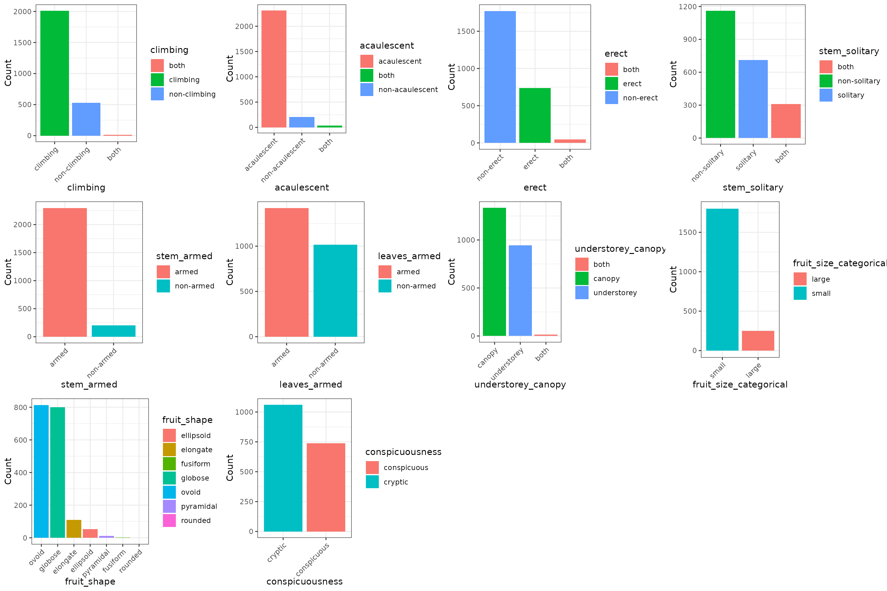

Load packages:
library(tidytuesdayR)
library(dplyr)
#>
#> Attaching package: 'dplyr'
#> The following objects are masked from 'package:stats':
#>
#> filter, lag
#> The following objects are masked from 'package:base':
#>
#> intersect, setdiff, setequal, union
library(purrr)
library(forcats)
library(ggplot2)
library(ggpubr)Load data:
ttData <- tidytuesdayR::tt_load('2025-03-18')
dat <- ttData$palmtrees
dat
#> # A tibble: 2,557 × 29
#> spec_name acc_genus acc_species palm_tribe palm_subfamily climbing
#> <chr> <chr> <chr> <chr> <chr> <chr>
#> 1 Acanthophoenix crin… Acanthop… crinita Areceae Arecoideae climbing
#> 2 Acanthophoenix rous… Acanthop… rousselii Areceae Arecoideae climbing
#> 3 Acanthophoenix rubra Acanthop… rubra Areceae Arecoideae climbing
#> 4 Acoelorrhaphe wrigh… Acoelorr… wrightii Trachycar… Coryphoideae climbing
#> 5 Acrocomia aculeata Acrocomia aculeata Cocoseae Arecoideae climbing
#> 6 Acrocomia crispa Acrocomia crispa Cocoseae Arecoideae climbing
#> 7 Acrocomia emensis Acrocomia emensis Cocoseae Arecoideae climbing
#> 8 Acrocomia glaucesce… Acrocomia glaucescens Cocoseae Arecoideae climbing
#> 9 Acrocomia hassleri Acrocomia hassleri Cocoseae Arecoideae climbing
#> 10 Acrocomia intumesce… Acrocomia intumescens Cocoseae Arecoideae climbing
#> # ℹ 2,547 more rows
#> # ℹ 23 more variables: acaulescent <chr>, erect <chr>, stem_solitary <chr>,
#> # stem_armed <chr>, leaves_armed <chr>, max_stem_height_m <dbl>,
#> # max_stem_dia_cm <dbl>, understorey_canopy <chr>, max_leaf_number <dbl>,
#> # max__blade__length_m <dbl>, max__rachis__length_m <dbl>,
#> # max__petiole_length_m <dbl>, average_fruit_length_cm <dbl>,
#> # min_fruit_length_cm <dbl>, max_fruit_length_cm <dbl>, …
glimpse(dat)
#> Rows: 2,557
#> Columns: 29
#> $ spec_name <chr> "Acanthophoenix crinita", "Acanthophoenix rous…
#> $ acc_genus <chr> "Acanthophoenix", "Acanthophoenix", "Acanthoph…
#> $ acc_species <chr> "crinita", "rousselii", "rubra", "wrightii", "…
#> $ palm_tribe <chr> "Areceae", "Areceae", "Areceae", "Trachycarpea…
#> $ palm_subfamily <chr> "Arecoideae", "Arecoideae", "Arecoideae", "Cor…
#> $ climbing <chr> "climbing", "climbing", "climbing", "climbing"…
#> $ acaulescent <chr> "acaulescent", "acaulescent", "acaulescent", "…
#> $ erect <chr> "non-erect", "non-erect", "non-erect", "non-er…
#> $ stem_solitary <chr> "non-solitary", "non-solitary", "non-solitary"…
#> $ stem_armed <chr> "non-armed", "non-armed", "non-armed", "armed"…
#> $ leaves_armed <chr> "non-armed", "non-armed", "non-armed", "non-ar…
#> $ max_stem_height_m <dbl> 10.0, 25.0, 15.0, 9.1, 12.0, 18.0, 0.0, NA, 0.…
#> $ max_stem_dia_cm <dbl> 20.0, 30.0, 18.0, 15.0, 50.0, 35.0, NA, NA, NA…
#> $ understorey_canopy <chr> "canopy", "canopy", "canopy", "canopy", "canop…
#> $ max_leaf_number <dbl> 15, NA, 20, 25, 30, 15, NA, NA, 6, NA, NA, NA,…
#> $ max__blade__length_m <dbl> 2.30, 3.00, 3.10, 1.30, 3.50, 3.00, NA, NA, 0.…
#> $ max__rachis__length_m <dbl> NA, NA, 3.00, 0.70, 2.50, NA, NA, NA, 0.54, NA…
#> $ max__petiole_length_m <dbl> NA, NA, NA, 0.65, NA, 0.65, NA, NA, 0.51, NA, …
#> $ average_fruit_length_cm <dbl> 0.65, 2.00, 1.00, 0.70, 4.25, 2.50, 2.00, NA, …
#> $ min_fruit_length_cm <dbl> 0.6, NA, NA, NA, 3.5, NA, NA, NA, 1.5, 3.8, NA…
#> $ max_fruit_length_cm <dbl> 0.7, NA, NA, NA, 5.0, NA, NA, NA, 3.0, 5.4, NA…
#> $ average_fruit_width_cm <dbl> 0.50, 0.80, 0.70, 0.70, 4.60, 1.80, 2.00, NA, …
#> $ min_fruit_width_cm <dbl> NA, NA, NA, 0.5, 3.8, NA, NA, NA, 1.5, 3.8, NA…
#> $ max_fruit_width_cm <dbl> NA, NA, NA, 0.9, 5.4, NA, NA, NA, 3.0, 5.4, NA…
#> $ fruit_size_categorical <chr> "small", "small", "small", "small", "large", "…
#> $ fruit_shape <chr> NA, "ovoid", "ovoid", "ovoid", "ovoid", "globo…
#> $ fruit_color_description <chr> "black", "black", "black", "orange-brown; beco…
#> $ main_fruit_colors <chr> "black", "black", "black", "brown; black", "gr…
#> $ conspicuousness <chr> "cryptic", "cryptic", "cryptic", "cryptic", "c…Let’s create a summary for all categorical variables with less than 10 elements:
colNms <- dat |>
map_if(.p = function(x) is.character(x) | is.factor(x), ~ unique(.x)) |>
keep(~ length(.x) < 10) |>
names()
colNms <- colNms[colNms != "palm_subfamily"]
datL <- vector("list", length(colNms))
names(datL) <- colNms
for (i in seq_along(datL)) {
datL[[i]] <- as.data.frame(table(dat[,colNms[i], drop = FALSE]))
}Let’s create a plot for each of them:
plots <- vector("list", length(colNms))
for (i in seq_along(colNms)) {
plots[[i]] <- datL[[colNms[i]]] |>
ggplot(aes(
x = reorder(.data[[colNms[i]]], -Freq),
y = Freq
)) +
geom_col(aes(fill = .data[[colNms[i]]])) +
xlab(colNms[i]) +
ylab("Count") +
theme_bw() +
theme(axis.text.x = element_text(angle = 45, hjust = 1))
}
ggarrange(
plotlist = plots
)
sessioninfo::session_info()
#> ─ Session info ───────────────────────────────────────────────────────────────
#> setting value
#> version R version 4.4.3 (2025-02-28)
#> os Ubuntu 24.04.2 LTS
#> system x86_64, linux-gnu
#> ui X11
#> language en
#> collate C.UTF-8
#> ctype C.UTF-8
#> tz UTC
#> date 2025-03-23
#> pandoc 3.1.11 @ /opt/hostedtoolcache/pandoc/3.1.11/x64/ (via rmarkdown)
#> quarto NA
#>
#> ─ Packages ───────────────────────────────────────────────────────────────────
#> package * version date (UTC) lib source
#> abind 1.4-8 2024-09-12 [1] RSPM
#> backports 1.5.0 2024-05-23 [1] RSPM
#> bit 4.6.0 2025-03-06 [1] RSPM
#> bit64 4.6.0-1 2025-01-16 [1] RSPM
#> broom 1.0.7 2024-09-26 [1] RSPM
#> bslib 0.9.0 2025-01-30 [1] RSPM
#> cachem 1.1.0 2024-05-16 [1] RSPM
#> car 3.1-3 2024-09-27 [1] RSPM
#> carData 3.0-5 2022-01-06 [1] RSPM
#> cli 3.6.4 2025-02-13 [1] RSPM
#> colorspace 2.1-1 2024-07-26 [1] RSPM
#> cowplot 1.1.3 2024-01-22 [1] RSPM
#> crayon 1.5.3 2024-06-20 [1] RSPM
#> curl 6.2.1 2025-02-19 [1] RSPM
#> desc 1.4.3 2023-12-10 [1] RSPM
#> digest 0.6.37 2024-08-19 [1] RSPM
#> dplyr * 1.1.4 2023-11-17 [1] RSPM
#> evaluate 1.0.3 2025-01-10 [1] RSPM
#> farver 2.1.2 2024-05-13 [1] RSPM
#> fastmap 1.2.0 2024-05-15 [1] RSPM
#> forcats * 1.0.0 2023-01-29 [1] RSPM
#> Formula 1.2-5 2023-02-24 [1] RSPM
#> fs 1.6.5 2024-10-30 [1] RSPM
#> generics 0.1.3 2022-07-05 [1] RSPM
#> ggplot2 * 3.5.1 2024-04-23 [1] RSPM
#> ggpubr * 0.6.0 2023-02-10 [1] RSPM
#> ggsignif 0.6.4 2022-10-13 [1] RSPM
#> gh 1.4.1 2024-03-28 [1] RSPM
#> gitcreds 0.1.2 2022-09-08 [1] RSPM
#> glue 1.8.0 2024-09-30 [1] RSPM
#> gtable 0.3.6 2024-10-25 [1] RSPM
#> hms 1.1.3 2023-03-21 [1] RSPM
#> htmltools 0.5.8.1 2024-04-04 [1] RSPM
#> httr2 1.1.1 2025-03-08 [1] RSPM
#> jquerylib 0.1.4 2021-04-26 [1] RSPM
#> jsonlite 1.9.1 2025-03-03 [1] RSPM
#> knitr 1.50 2025-03-16 [1] RSPM
#> labeling 0.4.3 2023-08-29 [1] RSPM
#> lifecycle 1.0.4 2023-11-07 [1] RSPM
#> lubridate 1.9.4 2024-12-08 [1] RSPM
#> magrittr 2.0.3 2022-03-30 [1] RSPM
#> munsell 0.5.1 2024-04-01 [1] RSPM
#> pillar 1.10.1 2025-01-07 [1] RSPM
#> pkgconfig 2.0.3 2019-09-22 [1] RSPM
#> pkgdown 2.1.1 2024-09-17 [1] any (@2.1.1)
#> purrr * 1.0.4 2025-02-05 [1] RSPM
#> R6 2.6.1 2025-02-15 [1] RSPM
#> ragg 1.3.3 2024-09-11 [1] RSPM
#> rappdirs 0.3.3 2021-01-31 [1] RSPM
#> readr 2.1.5 2024-01-10 [1] RSPM
#> rlang 1.1.5 2025-01-17 [1] RSPM
#> rmarkdown 2.29 2024-11-04 [1] RSPM
#> rstatix 0.7.2 2023-02-01 [1] RSPM
#> sass 0.4.9 2024-03-15 [1] RSPM
#> scales 1.3.0 2023-11-28 [1] RSPM
#> sessioninfo 1.2.3 2025-02-05 [1] RSPM
#> systemfonts 1.2.1 2025-01-20 [1] RSPM
#> textshaping 1.0.0 2025-01-20 [1] RSPM
#> tibble 3.2.1 2023-03-20 [1] RSPM
#> tidyr 1.3.1 2024-01-24 [1] RSPM
#> tidyselect 1.2.1 2024-03-11 [1] RSPM
#> tidytuesdayR * 1.1.2 2024-09-09 [1] RSPM
#> timechange 0.3.0 2024-01-18 [1] RSPM
#> tzdb 0.5.0 2025-03-15 [1] RSPM
#> utf8 1.2.4 2023-10-22 [1] RSPM
#> vctrs 0.6.5 2023-12-01 [1] RSPM
#> vroom 1.6.5 2023-12-05 [1] RSPM
#> withr 3.0.2 2024-10-28 [1] RSPM
#> xfun 0.51 2025-02-19 [1] RSPM
#> xml2 1.3.8 2025-03-14 [1] RSPM
#> yaml 2.3.10 2024-07-26 [1] RSPM
#>
#> [1] /home/runner/work/_temp/Library
#> [2] /opt/R/4.4.3/lib/R/site-library
#> [3] /opt/R/4.4.3/lib/R/library
#> * ── Packages attached to the search path.
#>
#> ──────────────────────────────────────────────────────────────────────────────